|
|
Particle Reader Objects
The Particle Reader objects allow for convenient access to particle monitor data created by the different Particle Studio solvers. They support a set of common methods which are available for all Particle Reader objects. In addition, each object offers some functions which only apply to their specific particle monitor type.
In order to allow for fast access to the particle data (which can be huge for some monitors), the philosophy of these reader objects is to prevent access to individual particles but to deliver complete arrays with the requested data for all particles at once.
Internally, the particle data is organized in one or more (time-)frames which consist of one or more samples. The actual number of frames and samples depends on the specific monitor type and settings and can be queried with appropriate functions. When loading monitor data to memory, the objects always process one frame at a time but load all samples at once. However, when requesting data, only the particle data for the currently selected sample (inside the currently loaded frame) is returned.
The following methods are available for all Particle Reader objects below.
Resets all internal values to their default settings, frees all internally allocated memory. It is recommend to call this command before using the object to ensure proper initialization and after using the object to avoid wasting memory for data which is not needed any more.
SelectDataSource ( String tree_path )
Selects a data source based on its path in the result tree.
Please do not call this method directly. Use the specialized object methods below instead.
Returns the number of trajectories available.
GetFrameInfo ( long number, single & tmin, single & tmax, single & tstep )
Retrieves information about the frame identified by number without loading the particle data. The parameter number can range from 0 to GetNFrames-1. The returned values are the frame minimum and maximum physical time (tmin and tmax) and the frame time step (tstep).
SelectFrame ( long number )
Selects a frame as the source for subsequent data request methods such as GetQuantityValues. This call loads the data for all particle inside the frame into memory. The parameter number can range from 0 to GetNFrames-1.
Returns the number of samples available in the current frame.
Please do not call this method directly. Use the specialized object methods below instead.
SelectSample ( long number )
Selects a specific sample from the current frame as the source for subsequent data request methods such as GetQuantityValues. The parameter number can range from 0 to GetNSamples-1.
Please do not call this method directly. Use the specialized object methods below instead.
Returns the number of particles inside the selected sample of the currently loaded frame.
Returns an array with all particle source IDs contained in the result data.
GetSourceName ( long id ) String
Returns the name of the particle source with the given id. The parameter id must be one of the entries of the array retrieved by the GetSourceIDs method. This information can be used to map particle source IDs retrieved via GetQuantityValues to their respective source name.
SelectSource ( long id )
Filters the data for subsequent calls to only yield particles that were emitted from the source id. The parameter id must be one of the entries of the array retrieved by the GetSourceIDs method.
Calls to SelectDataSource, LoadTrajectoryData, SelectMonitor, SelectSample, SelectFrame, SelectPlane, SelectTrajectory, Reset, etc. will remove the filter and lead to yielding particle data for all sources again.
Returns an array with all physical quantities that can be retrieved from the monitor data.
GetNComponents ( String quantity ) long
Returns the number of components of the given quantity. The return value is either 3 for vectorial or 1 for scalar quantities. The parameter quantity must be one of the entries of the array retrieved by the GetQuantityNames method.
GetQuantityValues ( String quantity, String component ) SingleArray
Returns an array with the quantity.component values for all particles in the selected sample of the current frame. The array length always corresponds to the result of a call to GetNParticles.
The parameter quantity must be one of the entries of the array retrieved by the GetQuantityNames method.
The following quantities are available for all monitors:
|
"Position" |
Particle position 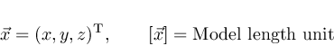 |
Vectorial |
|
"Momentum" |
Normed Momentum of the particle 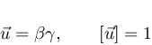 |
Vectorial |
|
"ChargeMacro" |
Particle macro charge 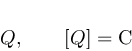 |
Scalar |
|
"Mass" |
Particle (non-macro) mass 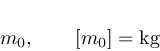 |
Scalar |
|
"Gamma" |
Lorentz factor 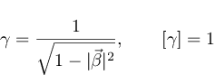 |
Scalar |
|
"Beta" |
Normed particle velocity 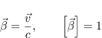 |
Vectorial |
|
"Velocity" |
Particle velocity 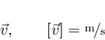 |
Vectorial |
|
"Energy" |
Particle kinetic energy in eV 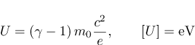 |
Scalar |
|
"Orbital Angle", "Angle" |
Orbital angle 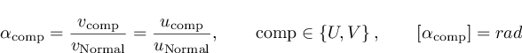
|
Vectorial |
The different monitors provide several additional quantities. Therefore, it is advisable to always use GetQuantityNames to query the monitor's capabilities.
The parameter component can be one of
|
"-1" |
"" |
"-" |
Queries a scalar value such as mass, current, etc. |
Has to be used for scalar quantities, see GetNComponents for more details. |
|
"0" |
"X" |
"X-DIRECTION" |
Returns the x-component of a vectorial quantity. |
Only apply to vectorial quantities, see GetNComponents for more details. |
|
"1" |
"Y" |
"Y-DIRECTION" |
Returns the y-component of a vectorial quantity. |
|
|
"2" |
"Z" |
"Z-DIRECTION" |
Returns the z-component of a vectorial quantity. |
|
|
"3" |
"ABS (XYZ)" |
"ABSOLUTE" |
Returns the norm of a vectorial quantity, i.e. 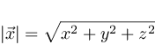 . |
|
|
"4" |
"U" |
"U-DIRECTION" |
Returns the projection of a vectorial quantity onto a plane's u-direction. |
Only apply to vectorial quantities, see GetNComponents for more details, and planar monitors, such as the Particle2DMonitorReader object. |
|
"5" |
"V" |
"V-DIRECTION" |
Returns the projection of a vectorial quantity onto a plane's v-direction. |
|
|
"6" |
"NORMAL" |
"W-DIRECTION" |
Returns the projection of a vectorial quantity onto a plane's normal-direction. |
|
|
"7" |
"ABS (UV)" |
"NORM(UV)" |
Returns the norm of the in-plane components of a vectorial quantity, i.e. 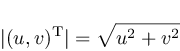 . |
All entries in an individual row of the table above are equivalent. The parameters quantity and component are case-insensitive to allow for more convenient VBA-UI development.
Subsequent calls to GetQuantityValues for different quantities retain the particle's order. Thus it is guaranteed, that for example after calling
lstPosX = GetQuantityValues("Position", "x")
lstPosY = GetQuantityValues("Position", "y")
lstPosZ = GetQuantityValues("Position", "z")
lstCurrent = GetQuantityValues("Current", "")
the entries
lstPosX(0), lstPosY(0), lstPosZ(0), lstCurrent(0)
contain the position and current of the very first particle in the selected sample.
Note: When the parameter quantity is equal to "ParticleID" or "EmissionID", the return type is LongArray.
GetQuantityWithReduction ( String quantity, String component, String reduction ) Single
In addition to retrieving the full list of quantities for all particles, it is possible to perform some immediate reductions on the data set.
For information on the parameters quantity and component, please refer to GetQuantityValues.
The parameter reduction can be any of (case-insensitive)
|
"min" |
Minimum value of quantity.component across all particles in the selected sample 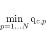 |
|
"max" |
Maximum value of quantity.component across all particles in the selected sample 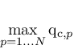 |
|
"mean" |
Mean value of quantity.component across all particles in the selected sample 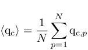 |
|
"total" |
Total sum of quantity.component across all particles in the selected sample 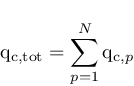 |
|
"deviation", "sigma" |
Standard deviation of quantity.component across all particles in the selected sample 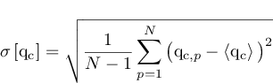 |
|
"rms" |
RMS value of quantity.component across all particles in the selected sample 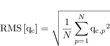 |
|
"norm" |
Norm of the quantity.component vector across all particles in the selected sample 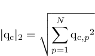 |
Returns an array of quantities that can be computed from the available particle data. These quantities are mainly beam quality parameters. Their computation is usually more involved than the reductions available via GetQuantityWithReduction.
GetGlobalQuantity ( String quantity, String component ) Single
Computes and returns the requested global quantity. The parameter quantity must be one of the entries of the array retrieved by the GetSupportedQuantityNames method. For the possible values of the parameter component, refer to GetQuantityValues.
Currently, the following global quantities are supported, but not applicable for all monitors:
|
"Emittance" |
Computes the RMS emittance 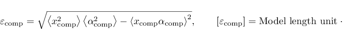 . |
Usually, the components "U" and "V" will be of interest. |
|
"Envelope" |
Computes the beam envelope, i.e. the maximum absolute distance of all particles from their average position 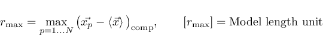 . |
The distance can be computed component-wise ("X", "Y", "Z", "U", "V"), circular ("ABS (UV)") or spherical ("ABS (XYZ)"). |
|
"Velocity Spread" |
Computes the velocity spread 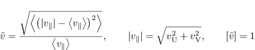 . |
Scalar quantity, component must be "". |
|
"Divergence Angle" |
Computes the beam divergence angle 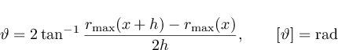 . |
Scalar quantity, component must be "". |
|
"Brightness" |
Computes the beam brightness 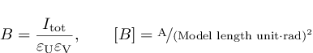 . |
Scalar quantity, component must be "". |
To simplify access to often-used data, the following convenience methods are available. They are mostly shorthand notations that can also be achieved using an appropriate GetQuantityValues or GetGlobalQuantity call.
GetPositionsX SingleArray
GetPositionsY SingleArray
GetPositionsZ SingleArray
Retrieve the x-, y-, and z-component of all particle positions.
GetMomentaX SingleArray
GetMomentaY SingleArray
GetMomentaZ SingleArray
Retrieve the x-, y-, and z-component of all particle momenta.
GetMacroCharges SingleArray
Retrieve the macro charges of all particles.
GetTimes SingleArray
Retrieve the collision time of all particles with the monitor (not available for all monitor types).
GetCurrents SingleArray
Retrieve all particle currents (not available for all monitor types).
GetMasses SingleArray
Retrieve all particle masses.
GetParticleIDs LongArray
Retrieve the unique IDs of all particles (not available for all monitor types).
GetEmissionIDs LongArray
Retrieve the unique IDs of all particle sources and interfaces.
The following quantities can only be computed from 2D monitors. Not each quantity is available for every solver:
GetEmittance ( String component ) Single
Returns the emittance, see GetGlobalQuantity for details.
GetEnvelope ( String component ) Single
Returns the envelope, see GetGlobalQuantity for details.
GetVelocitySpread Single
Returns the beam velocity spread, see GetGlobalQuantity for details.
GetDivergenceAngle Single
Returns the beam divergence angle, see GetGlobalQuantity for details.
GetBrightness Single
Returns the beam brightness, see GetGlobalQuantity for details.
Particle2DMonitorReader and PIC2DMonitorReader Object
Particle2DMonitorReader data consists of multiple frames. The first frame is selected automatically. The monitor's planes are represented by the individual samples in the dataset.
PIC2DMonitorReader data only consists of a single plane which is automatically selected. However, multiple frames are available.
In addition to the common methods, the following methods are available:
Returns an array with all Particle 2D Monitors that contain result data.
SelectMonitor ( String name )
Selects a specific monitor as source for subsequent data request methods such as GetQuantityValues. The parameter name must be one of the entries of the array retrieved by the GetMonitorNames method. This call automatically loads the monitor data to memory and automatically selects the first plane.
Returns the number of monitor planes available.
SelectPlane ( long number )
Selects a specific monitor plane as the source for subsequent data request methods such as GetQuantityValues. The parameter number can range from 0 to GetNPlanes-1.
GetNormal ( double & xNorm, double & yNorm, double & zNorm )
Returns the normal of the selected monitor plane.
GetLocalU ( double & xNorm, double & yNorm, double & zNorm )
GetLocalV ( double & xNorm, double & yNorm, double & zNorm )
Returns the local (in-plane) coordinate system of the selected plane.
GetPlaneDistance double
Returns the distance of the selected plane from the origin.
RemoveOutliers ( double current_percent )
This methods removes outlier particles from the currently selected plane. The parameter current_percent can be any value between 0 and 100. It specifies the percentage of the total current through the plane to be kept. The method first sorts all particles on the plane by their distance to the average position. Then, starting from the most central particles, it runs outwards and accumulates the particle current. As soon as the current reaches the given percentage of the total current, the method terminates and removes all remaining particles. After calling this method, GetNParticles will return the appropriately reduced number of particles and the arrays returned by GetQuantityValues are shorter.
Note, that while the original result data files are not modified by this method, the in-memory representation is. Thus, the only way to undo this operation is to reload the monitor from disk again using SelectMonitor and SelectPlane.
PICPositionMonitorReader Object
PICPositionMonitorReader data consists of multiple frames which correspond to the monitor time steps. Each frame only consists of a single sample which is selected automatically upon calling SelectFrame.
In addition to the common methods, the following methods are available:
Returns an array with all PIC Position Monitors that contain result data.
SelectMonitor ( String name )
Selects a specific monitor as source for subsequent data request methods such as GetQuantityValues. The parameter name must be one of the entries of the array retrieved by the GetMonitorNames method. This call automatically selects the first frame of the monitor and loads the respective data to memory.
ParticleTrajectoryReader Object
ParticleTrajectoryReader data only consists of a single frame which is automatically selected. The individual trajectories are represented by the samples in the dataset.
In addition to the common methods, the following methods are available:
Loads all trajectory data into memory.
Returns the number of trajectories available.
SelectTrajectory ( long number )
Selects a specific trajectory as the source for subsequent data request methods such as GetQuantityValues. The parameter number can range from 0 to GetNTrajectories-1.
' Get some result data from the PIC position monitor and prints it into one text file per frame
' Attention: this can produce a huge amount of data
Sub Main
Dim lstMonitors() As String
lstMonitors = PICPositionMonitorReader.GetMonitorNames()
' for simplicity, we just select the very first monitor found
Dim sMonitorName As String
sMonitorName = lstMonitors(0)
PICPositionMonitorReader.SelectMonitor(sMonitorName)
Dim iFrame As Long
For iFrame=0 To PICPositionMonitorReader.GetNFrames()-1
Dim sFileName As String
sFileName = sMonitorName + " - Frame" + Format(iFrame, "000") + ".txt"
Open sFileName For Output As #1
PICPositionMonitorReader.SelectFrame(iFrame)
Dim lstPosX() As Single, lstPosY() As Single, lstMomentum() As Single
lstPosX = PICPositionMonitorReader.GetQuantityValues("Position", "X")
lstPosY = PICPositionMonitorReader.GetQuantityValues("Position", "Y")
lstMomentum = PICPositionMonitorReader.GetQuantityValues("Momentum", "ABS (XYZ)")
Dim iParticle As Long
For iParticle = 0 To PICPositionMonitorReader.GetNParticles()-1
Print #1, iParticle; " "; lstPosX(iParticle); " "; lstPosY(iParticle); " "; lstMomentum(iParticle); " "
Next
Close #1
Next
End Sub
| CST Studio Suite 2022 |
|